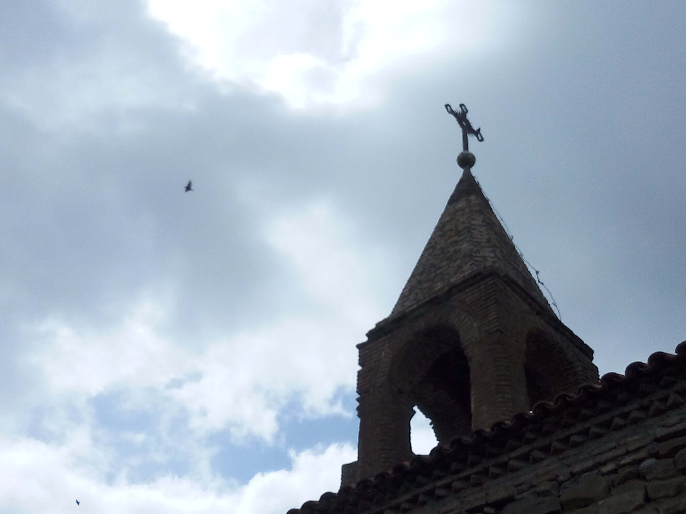

Kakheti – David Gareji Monastery
Kakheti · Georgia
Located in the semi-arid landscapes of eastern Georgia, David Gareji Monastery is one of the country's most remarkable historical and religious sites. Founded in the sixth century, this extensive monastic complex is known for its rock-cut chapels, ancient cave dwellings, and distinctive landscape near the border with Azerbaijan. The surrounding hills create a striking setting that reflects Georgia's rich cultural and spiritual heritage. These photographs capture my personal travel memories of David Gareji Monastery and the Kakheti region.
My Photo Gallery
Explore my personal photographs and travel memories from David Gareji Monastery, Kakheti, Georgia.
View All Photos ↗